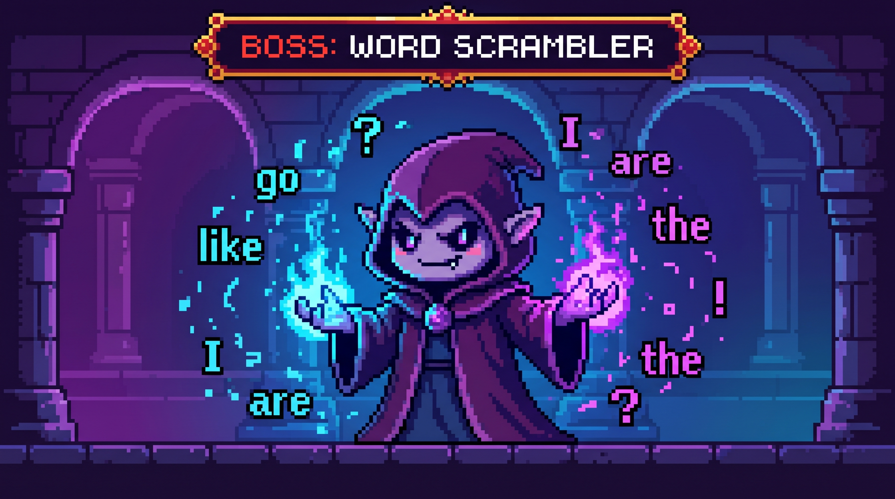

🎉 ⭕ ✨
CLEAR!
すべての問題をクリアしました！
ステージ選択へ戻る
WORD ORDER QUEST
中1 英文法 語順トレーニング
連続日数
1日
スコア
0 pt
制覇ステージ
0 / 10
◀ ステージ選択へ
挑戦するパートを選んでください
◀ もどる
⚡ 2 COMBO!

⚠️ BOSS BATTLE：不要な単語を1つ見抜け！
ならべた英文（タップで戻す）
えらぶ単語
リセット
決定する
次の問題へ進む ▶